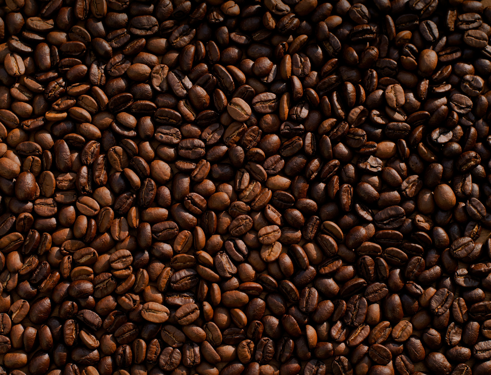

Introduction
Coffee is more than a morning ritual—it’s a journey of flavors, aromas, and traditions. From the bold, earthy character of Arabica and Robusta beans to the unique qualities of Liberica and Excelsa, each type of coffee bean offers a distinct experience. Explore different brewing methods, from classic drip and French press to espresso and pour-over, and discover how technique can transform the flavor in your cup. Along the way, learn about the potential health benefits of coffee, including its natural antioxidants and caffeine, while understanding the importance of enjoying it in moderation. Whether you’re a lifelong coffee lover or just beginning to explore, this is your guide to making every cup more flavorful and meaningful.
Beans
Coffee beans come in several varieties, each offering a distinct flavor, aroma, and level of acidity. The four main types are Arabica, Robusta, Liberica, and Excelsa. Arabica is known for its smooth, complex flavor, while Robusta tends to have a stronger, more bitter taste and higher caffeine content. Liberica and Excelsa are less common and are valued for their distinctive, often fruity and smoky flavor profiles. Together, these varieties provide coffee drinkers with a wide range of tastes and experiences.
Brewing
Brewing coffee is an art that brings out the unique flavors and aromas of each bean. From the rich intensity of espresso to the smooth simplicity of a French press or pour-over, every method creates a different coffee experience. Discover how grind size, water temperature, and brewing time can transform your cup.
Grind Size
Grind size determines how quickly water extracts flavor from coffee grounds. Fine grinds provide more surface area and extract faster, making them ideal for espresso. Medium grinds work well for drip coffee, while coarse grinds are commonly used for French press.
Temperature
Water temperature affects how efficiently flavors and compounds are extracted from the coffee grounds. Water that is too hot can lead to excessive extraction and harsh or bitter flavors, while water that is too cool may produce a flat or sour-tasting cup.
Brewing Time
Brewing time controls how long water remains in contact with the coffee grounds. Shorter brewing times generally produce less extraction, while longer times allow more compounds to dissolve into the water.
Health


Coffee can have several potential health effects when consumed in moderation. Its caffeine may increase alertness, attention, and energy, while coffee also contains antioxidants and other compounds that may contribute to overall health.
Research has associated regular coffee consumption with a lower risk of certain conditions, although individual responses can vary. However, too much caffeine may cause sleep problems, anxiety, headaches, or a rapid heartbeat, so moderation and personal tolerance are important when enjoying coffee.